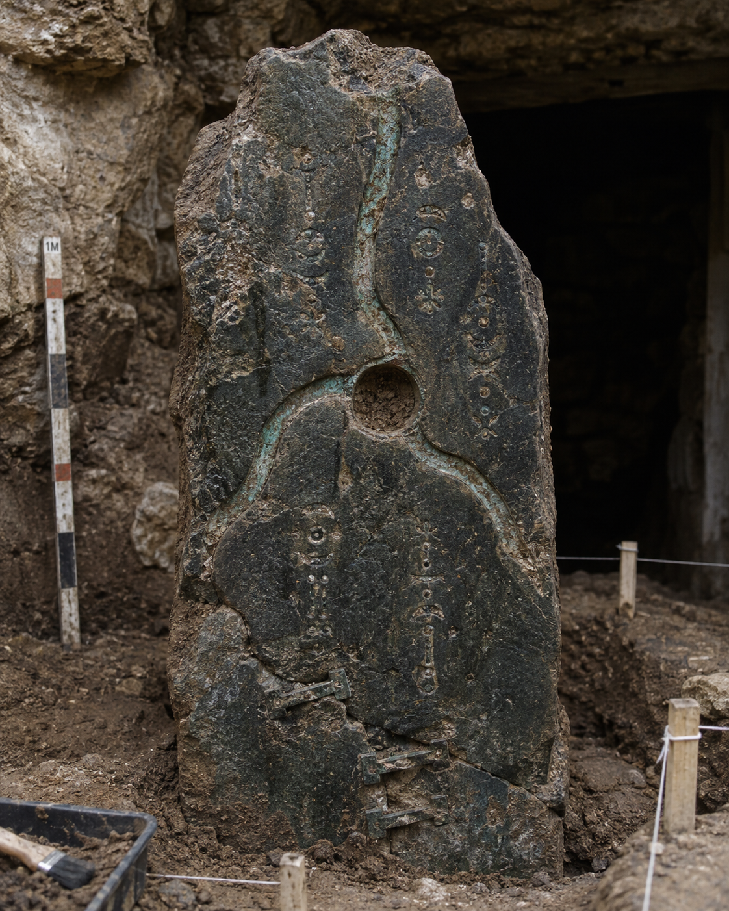
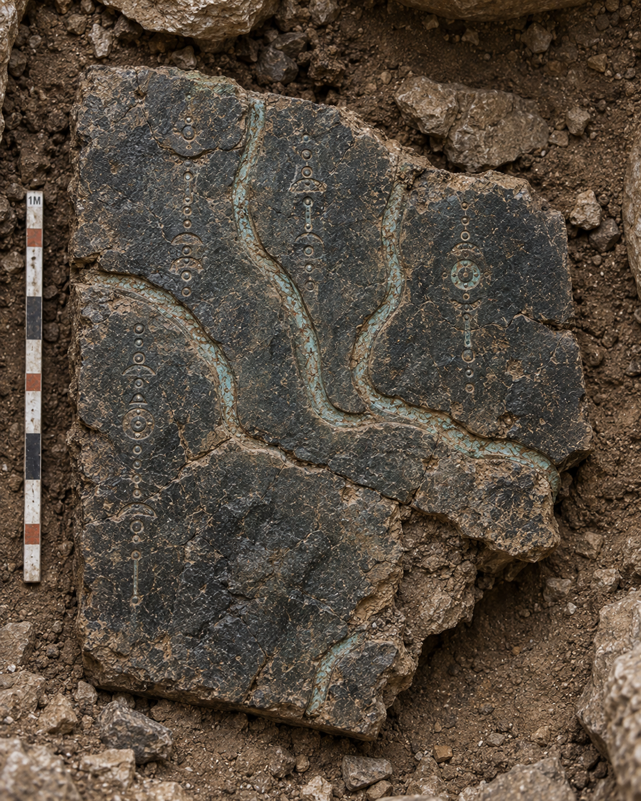
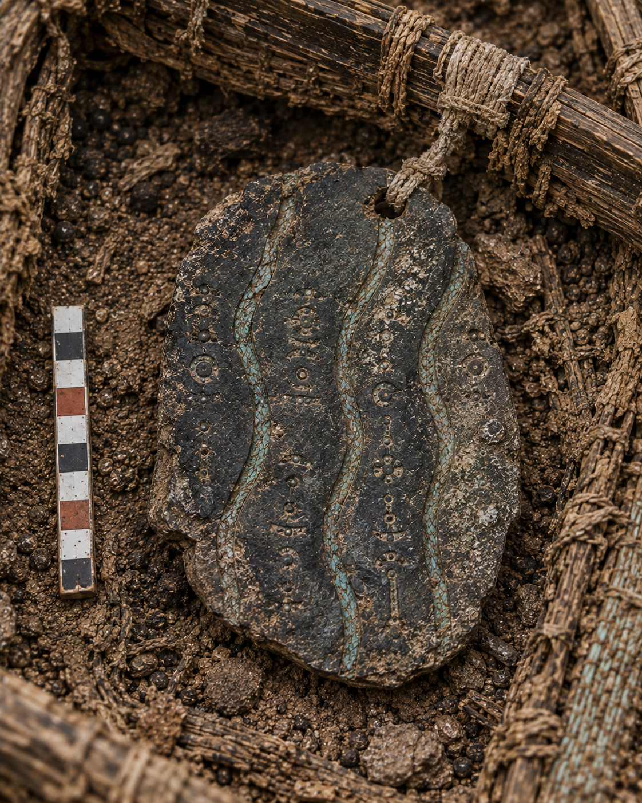

Criatividade Computacional · CIn/UFPE · 2026.2



Em 9 de setembro de 2026, o grupo partiu da ideia de um museu virtual de uma civilização desaparecida. Na discussão registrada naquele dia, percebeu que reunir objetos da mesma civilização ainda produziria apenas um lote. Com as skills abrir-o-leque, afiar-o-eixo e derrubar-a-ideia, transformou a proposta em uma escavação sequencial: cada imagem passaria a ser uma descoberta que alterava o contexto da seguinte. Também recusou a restrição de nunca mostrar a civilização diretamente e adotou outra, mais operacional: nenhuma novidade poderia entrar sem sustentação no conhecimento acumulado.
A coleção começou a existir de fato em 22 de setembro, quando Ellian Rodrigues produziu e registrou a Estela das Três Correntes e O Limiar Apagado. A estela estabeleceu pedra escura, cobre oxidado, inscrições, reparos e três linhas convergentes; o portal acrescentou o apagamento intencional de uma delas. Em 23 de setembro, Aline Marianna criou as descobertas 03 e 04, convertendo a ausência em selamento e depois em ocultação deliberada; no mesmo dia, Nícolas Veiga criou as descobertas 05 e 06, levando o padrão triplo para uma prática material e para uma possível organização espacial.
Em 24 de setembro, Amanda Arruda produziu as descobertas 07 e 08, aproximando rotas e convergência e depois mudando o suporte da pedra para um tecido reparado. Fabriely Santos produziu as descobertas 09 e 10, levando a investigação ao cesto, aos resíduos e aos recipientes utilitários. Foi nesse bloco que o processo travou: a primeira versão da descoberta 10 mostrou uma cozinha e tratou os resíduos como alimento antes de haver evidência para isso. A imagem foi descartada, o prompt foi refeito e a investigação voltou ao interior do próprio cesto.
Em 28 de setembro, Monyque Lima concluiu a sequência com A Grade dos Quatro Espaços e A Placa das Quatro Partes. As últimas peças mudaram a leitura do motivo: três elementos também podiam funcionar como divisórias de quatro campos. Ainda em 28 de setembro, Ellian organizou a primeira versão da apresentação e o roteiro. Em 29 de setembro, Amanda consolidou o caderno de bordo e adicionou a versão final da apresentação em PDF. A coleção terminou com doze imagens, um descarte preservado e uma interpretação ainda aberta, não com uma tradução definitiva das inscrições.
O eixo declarado em 9 de setembro permaneceu reconhecível na entrega: a ordem importou, cada descoberta partiu das anteriores e nenhuma imagem deveria apenas repetir a estética. O conteúdo mudou — o mistério da “terceira corrente” terminou como um problema mais amplo de conexão e separação entre partes —, mas isso ocorreu dentro do eixo, não por substituição dele.
Manter o eixo teve custo concreto. Em 24 de setembro, o grupo abriu mão da cozinha já gerada porque ela exigia aceitar, de uma vez, que os resíduos eram alimentos, que existia uma área doméstica próxima e que os dois espaços tinham relação funcional. A descoberta 10 ficou mais contida: mostrou somente os recipientes efetivamente encontrados no cesto. Esse descarte foi a prova de que a continuidade funcionou como restrição e não apenas como justificativa posterior.
O maior desafio foi controlar o tamanho de cada avanço narrativo enquanto seis pessoas produziam uma série dependente. Cada integrante recebeu duas descobertas, mas não podia começar do zero: precisava distinguir o que a imagem anterior mostrava, o que sua descrição apenas sugeria e o que ainda não podia ser afirmado. O problema consumiu tempo porque uma imagem podia manter pedra, cobre e inscrições e, mesmo assim, quebrar a coleção ao introduzir conclusões demais.
O caso mais claro ocorreu entre O Cesto de Travessia e a primeira tentativa da descoberta 10. O cesto continha resíduos escurecidos semelhantes a grãos, cerâmica e material mineral, mas a descrição da descoberta 09 recusava identificá-los como alimentos. A tentativa seguinte pulou dessa incerteza para uma cozinha com fogareiro, pedra de moagem e recipiente reparado. Para aceitar a cena, o grupo teria de confirmar três hipóteses que o próprio artefato anterior havia mantido abertas.
Antes de resolver o problema, o grupo já havia tentado manter continuidade por referências visuais, repetição das três correntes e reaproveitamento de pedra escura, cobre oxidado, inscrições e reparos. Isso garantiu unidade formal, mas não controlou as afirmações narrativas. A saída foi voltar fisicamente ao cesto: a descoberta 10 revelou quatro recipientes sob a camada superior; a 11 revelou a grade que os separava; e a 12 ligou a grade a uma placa inscrita. Três etapas substituíram a conclusão prematura de “cozinha” por evidências graduais de manipulação e separação de materiais.
O erro que não repetiríamos foi incorporar as descobertas 11 e 12 sem exigir o mesmo pacote de documentação das dez anteriores. Monyque Lima adicionou as duas imagens e suas descrições em 28 de setembro, e o grupo as aceitou como fechamento da coleção. Entretanto, não foram preservados os prompts, a ferramenta, o modelo, os parâmetros, as referências nem a sessão de geração dessas peças.
A consequência apareceu no processo, mesmo que as imagens finais permanecessem coerentes. Para as descobertas 01–10, era possível reconstruir a direção escolhida, o contexto fornecido, a ferramenta usada e a avaliação do resultado. Para as duas últimas, só era possível reconstruir a decisão conceitual a partir das descrições. Isso enfraqueceu justamente a distinção que o grupo queria apresentar entre decisões humanas e contribuições da IA.
O problema ficou explícito em 29 de setembro, quando Amanda Arruda consolidou o caderno de bordo e precisou registrar “ferramenta não registrada”, “parâmetros não registrados” e “prompt ou sessão de geração não registrados”. O histórico não nomeou uma reunião específica sobre essa decisão; mostrou Monyque como autora do par final e Amanda como responsável pela consolidação que detectou a lacuna. Por isso, o erro foi tratado como falha do critério coletivo de conclusão, e não como responsabilidade isolada de quem produziu as imagens.
Referência visual resolveu consistência, mas não resolveu rastreabilidade. O ChatGPT foi registrado nas descobertas 01–08, e o Codex com gerador integrado nas 09–10. Imagens anteriores foram usadas para manter pedra, cobre, inscrições e enquadramento. Ao mesmo tempo, seeds e parâmetros nem sempre ficaram disponíveis, e as descobertas 11–12 perderam até o registro da ferramenta. A partir desse episódio, o grupo concluiu que prompt, ferramenta, referência e resultado precisavam ser salvos no momento da geração, não reconstruídos no fim.
A unidade de uma série estava na dependência entre as peças, não na repetição do estilo. A cozinha descartada provou que uma imagem arqueológica convincente podia estar errada para aquele ponto da sequência. O procedimento que funcionou foi listar, antes de cada prompt, os fatos confirmados, as hipóteses abertas e a única informação nova que a próxima descoberta poderia sustentar. As descobertas 10–12 resultaram dessa desaceleração.
A divisão em pares permitiu avançar rapidamente, mas exigiu passagens de contexto bem definidas. Cada integrante entregou duas descobertas, o que permitiu produzir doze peças entre 22 e 28 de setembro. Além dos artefatos, o grupo distribuiu tarefas de estruturação, consolidação, apresentação e registro do descarte. A lacuna das peças 11–12 mostrou que ainda era necessária uma definição comum de “pronto” para cada passagem.
Para o Projeto Ferramenta, o grupo definiu como prática necessária um checklist de entrega por etapa: artefato, descrição, prompt, ferramenta/modelo, referências, tentativas, decisão e atualização do contexto. Também concluiu que a revisão deveria acontecer a cada passagem entre integrantes, porque uma inconsistência descoberta apenas na consolidação final já não podia ser corrigida sem refazer a memória do processo.
Ellian Rodrigues. Estruturou o repositório e a documentação inicial em 10 de setembro. Em 22 de setembro, produziu a Estela das Três Correntes e O Limiar Apagado, com imagens, descrições, prompts, registros de geração e atualização das ferramentas. Em 28 de setembro, criou o gerador da apresentação e o roteiro oral.
Aline Marianna. Em 23 de setembro, produziu A Câmara do Terceiro Vazio e O Disco Oculto. Registrou as imagens, descrições e prompts e atualizou o caderno de gerações com a passagem do apagamento para o selamento e, depois, para a preservação secreta da terceira corrente.
Nícolas Veiga. Em 23 de setembro, produziu A Mesa das Três Ofertas e O Fragmento das Três Rotas. Registrou imagens, descrições e prompts e atualizou o caderno, levando o padrão triplo de objetos e arquitetura para uma prática material e uma possível representação espacial.
Amanda Arruda. Em 24 de setembro, produziu A Confluência Vazia e O Tecido das Três Tramas, com imagens, descrições, prompts e registros no caderno. Também atualizou a organização da coleção. Em 29 de setembro, reuniu o processo no caderno de bordo consolidado, adicionou a nova versão da apresentação em PDF e vinculou esse material à documentação.
Fabriely Santos. Em 24 de setembro, produziu O Cesto de Travessia e Os Recipientes do Cesto, com imagens, descrições, prompts e atualização do caderno. Gerou a primeira versão da descoberta 10, registrou seu descarte por salto narrativo e documentou a reformulação que manteve a investigação dentro do cesto.
Monyque Lima. Em 28 de setembro, produziu A Grade dos Quatro Espaços e A Placa das Quatro Partes, adicionando as imagens e descrições que fecharam a coleção e reinterpretaram as três linhas como elementos capazes de dividir quatro campos. O repositório não preservou os prompts nem os dados técnicos dessas duas gerações.
A divisão dos artefatos foi uniforme: duas descobertas por integrante. Ellian iniciou a sequência e estruturou o repositório e a primeira apresentação; Aline desenvolveu o selamento e a preservação da terceira corrente; Nícolas levou o padrão triplo para as práticas materiais e a organização espacial; Amanda conectou as rotas ao tecido e também consolidou o caderno e a apresentação final; Fabriely introduziu o cotidiano pelo cesto e registrou o descarte da cozinha; e Monyque encerrou a coleção reinterpretando as três linhas por meio dos quatro espaços e dos quatro campos.
Base documental: caderno de bordo consolidado, arquivos de prompts, descrições da coleção, registro de descartes e histórico de commits do repositório entre 10 e 29 de setembro de 2026.